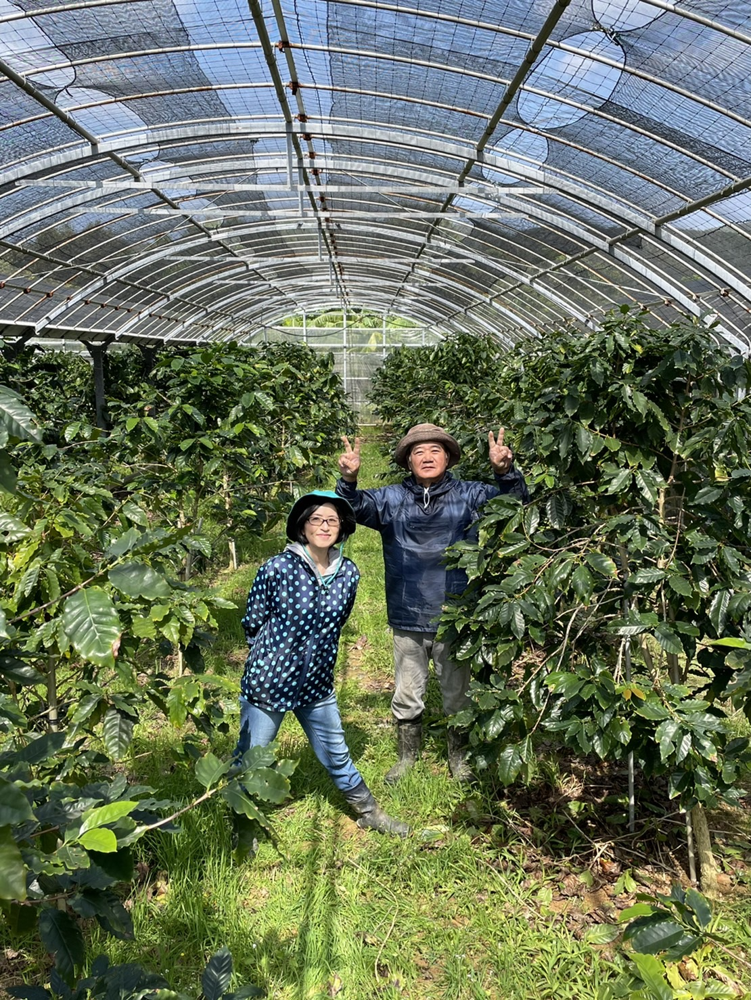

コーヒー好きの母の為に、少しでも体に良いものを飲んでほしいという想いから、父が約12年前に始めました。
主に鶏糞・牛糞などの有機肥料を使用し、手間暇かけて育てています。
毎年約500本の木から採れる数量限定の国産100％コーヒーです。
沖縄では収穫時期が限られていることから、販売期間も４月～６月までの限定です。
完熟した実を手摘みで収穫して水で洗います。水に浮いた実は丁寧に取り除きます。
コーヒーの種類（推定）
※収穫時期: 11月～3月ごろ
豆と果肉を分けます。果肉を除去した後は風通しの良い所で3週間～1か月程天日乾燥させます。ハーモニーファームでは二つの方法でコーヒーを精製しています。
ウォッシュド
２日～３日水に漬けて種子に付いた果肉層（ミューシレージ）を取り除き、綺麗に洗い流した後、天日乾燥します。
ハニー
果肉層（ミューシレージ）を取り除かずそのまま天日乾燥します。
風通しの良い所で３週間～1か月程乾燥させます。乾燥が終わった豆にはパーチメントと呼ばれる薄い殻が付いているので脱穀機で取り除きます。脱穀した豆を『生豆』と言います。
割れたり欠けたりした欠点豆を手作業で取り除きます。その後、焙煎すると普段見慣れたコーヒー豆になります。収穫してから焙煎できる状態になるまでに２～３か月くらいかかります。
コーヒーの出来上がりです。
2008年に沖縄県国頭郡東村川田でコーヒー栽培を始めました。遮光ネットを張ったハウスで、約500本のコーヒーの木を栽培しています。
私たちが作っています。
